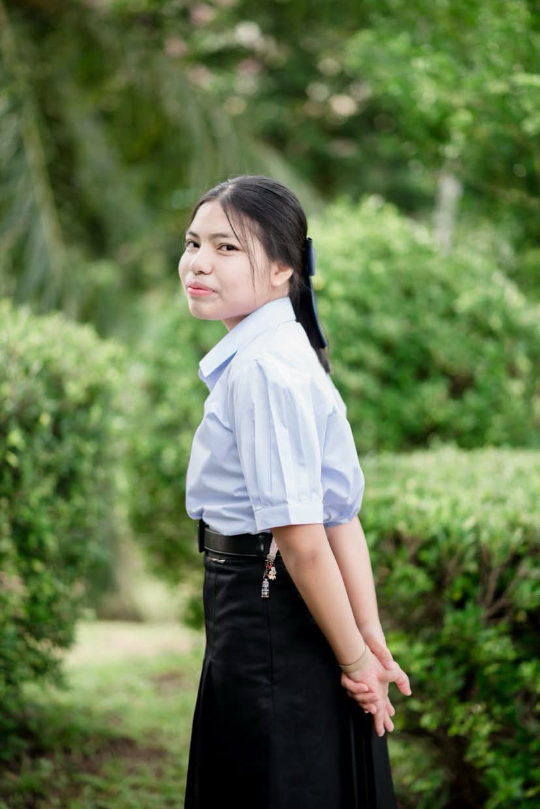
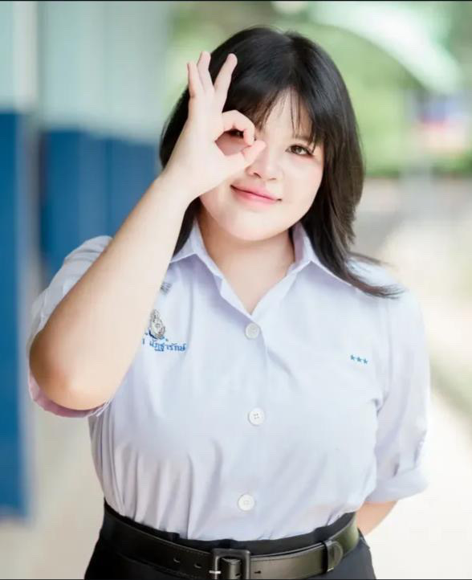
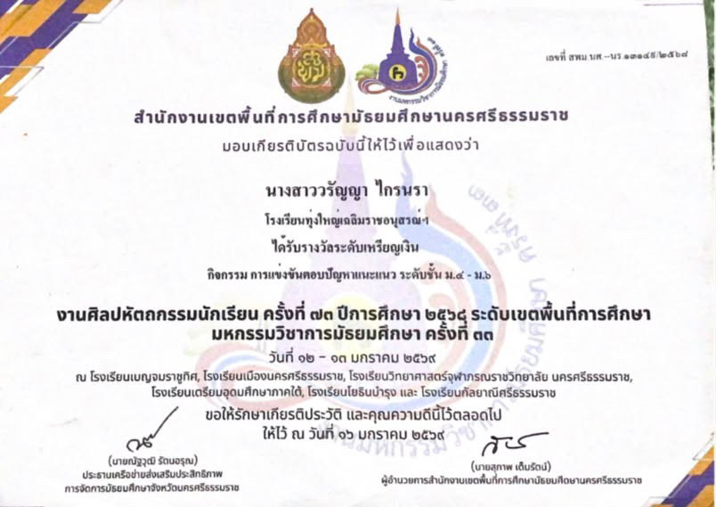
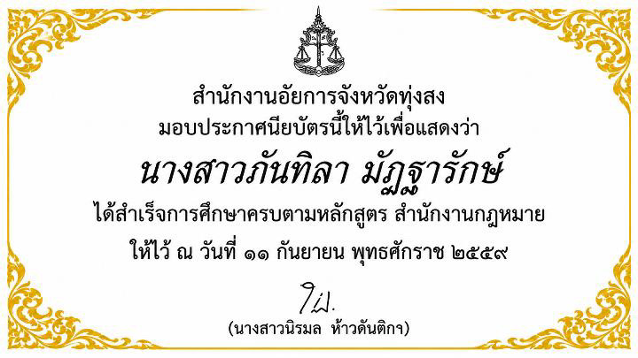

WELCOME TO MY PORTFOLIO
เลือกชมแฟ้มสะสมผลงานของนักเรียน

วรัญญา ไกรนรา
สาขาบริหารธุรกิจ
วิชาเอกการเป็นผู้ประกอบการ

ภันทิลา มัฎฐารักษ์
คณะนิติศาสตร์
นางสาววรัญญา ไกรนรา
แฟ้มสะสมผลงาน (PORTFOLIO)
01 ประวัติส่วนตัว
ชื่อ-นามสกุล: นางสาววรัญญา ไกรนรา
ระดับการศึกษา: ชั้นมัธยมศึกษาปีที่ 6
แผนการเรียน: ศิลป์-คำนวณ
โรงเรียน: ทุ่งใหญ่เฉลิมราชอนุสรณ์รัชมังคลาภิเษก
ระดับการศึกษา: ชั้นมัธยมศึกษาปีที่ 6
แผนการเรียน: ศิลป์-คำนวณ
โรงเรียน: ทุ่งใหญ่เฉลิมราชอนุสรณ์รัชมังคลาภิเษก
02 ประวัติการศึกษาและเป้าหมาย
มีความมุ่งมั่นที่จะศึกษาต่อในระดับอุดมศึกษา
มหาวิทยาลัย: มหาวิทยาลัยราชภัฏสุราษฎร์ธานี
คณะ: วิทยาการจัดการ
สาขา: บริหารธุรกิจ
วิชาเอก: การเป็นผู้ประกอบการ
มหาวิทยาลัย: มหาวิทยาลัยราชภัฏสุราษฎร์ธานี
คณะ: วิทยาการจัดการ
สาขา: บริหารธุรกิจ
วิชาเอก: การเป็นผู้ประกอบการ
03 กิจกรรมที่เข้าร่วม
เข้าร่วมการแข่งขันตอบปัญหาแนะแนว ระดับชั้นมัธยมศึกษาปีที่ 4–6
และได้รับรางวัล เหรียญเงิน
กิจกรรมดังกล่าวช่วยฝึกทักษะการคิด วิเคราะห์ การแก้ไขปัญหา
และการแสวงหาความรู้
04 อาชีพในฝัน
เจ้าของคาเฟ่
มีความใฝ่ฝันที่จะเปิดคาเฟ่เป็นของตนเอง ต้องการนำความรู้ด้านธุรกิจและการเป็นผู้ประกอบการ มาพัฒนาร้านให้มีเอกลักษณ์และสามารถดำเนินธุรกิจได้อย่างยั่งยืน
มีความใฝ่ฝันที่จะเปิดคาเฟ่เป็นของตนเอง ต้องการนำความรู้ด้านธุรกิจและการเป็นผู้ประกอบการ มาพัฒนาร้านให้มีเอกลักษณ์และสามารถดำเนินธุรกิจได้อย่างยั่งยืน
05 เกียรติบัตรและความภาคภูมิใจ

เกียรติบัตรการแข่งขันตอบปัญหาแนะแนว ระดับมัธยมศึกษาปีที่ 4–6
นางสาวภันทิลา มัฎฐารักษ์
แฟ้มสะสมผลงาน (PORTFOLIO)
01 ประวัติส่วนตัว
ชื่อ-นามสกุล: นางสาวภันทิลา มัฎฐารักษ์
ระดับการศึกษา: ชั้นมัธยมศึกษาปีที่ 6
แผนการเรียน: ศิลป์-คำนวณ
โรงเรียน: ทุ่งใหญ่เฉลิมราชอนุสรณ์รัชมังคลาภิเษก
ระดับการศึกษา: ชั้นมัธยมศึกษาปีที่ 6
แผนการเรียน: ศิลป์-คำนวณ
โรงเรียน: ทุ่งใหญ่เฉลิมราชอนุสรณ์รัชมังคลาภิเษก
02 ประวัติการศึกษาและเป้าหมาย
มีความตั้งใจที่จะศึกษาต่อในระดับอุดมศึกษา
มหาวิทยาลัย: มหาวิทยาลัยราชภัฏสุราษฎร์ธานี
คณะ: นิติศาสตร์
มหาวิทยาลัย: มหาวิทยาลัยราชภัฏสุราษฎร์ธานี
คณะ: นิติศาสตร์
03 กิจกรรมและประสบการณ์
เข้าร่วมฝึกประสบการณ์ ณ สำนักงานอัยการ จังหวัดทุ่งสง
ได้เรียนรู้เกี่ยวกับการทำงานในหน่วยงานด้านกฎหมาย
การปฏิบัติงาน และความรับผิดชอบ
ซึ่งช่วยสร้างความเข้าใจเกี่ยวกับวิชาชีพด้านกฎหมายมากยิ่งขึ้น
04 อาชีพในฝัน
อัยการ
มีความใฝ่ฝันที่จะประกอบอาชีพอัยการ โดยมุ่งหวังที่จะนำความรู้ทางกฎหมายมาใช้ในการอำนวยความยุติธรรม และปฏิบัติหน้าที่ด้วยความซื่อสัตย์และเป็นธรรม
มีความใฝ่ฝันที่จะประกอบอาชีพอัยการ โดยมุ่งหวังที่จะนำความรู้ทางกฎหมายมาใช้ในการอำนวยความยุติธรรม และปฏิบัติหน้าที่ด้วยความซื่อสัตย์และเป็นธรรม
05 เกียรติบัตรและความภาคภูมิใจ

เกียรติบัตรประจำตัว